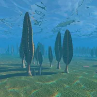

下午摸鱼，一边开会，一边向GPT有关地质年代的知识，进行一场赛博远古之旅。从最早的冥古宙炼狱一般的岩浆海，跨越几十亿年的时光，来到安静而又充满活力的埃迪卡拉级的海岸，终于感受到了一种度假的感觉。用GPT的话来讲就是“它既保留了远古地球的陌生感，又已经拥有丰富而独特的生命景观，是整个前寒武纪最值得旅游的目的地。”
埃迪卡拉生物们给人一种很松弛的感觉，与世无争地躺在海底，在食物充足的环境中躺平了几千万年。那时大家都很友好，没有内卷，也没有焦虑，所有人都有光明的未来。
我很想在这样的海岸边待上一下午，听着海浪拍打岩石，看着这些缓慢呼吸，静静生长的前辈们，什么也不想，和它们一样，纯粹地感受这个世界。
或许可以让某个角色拥有将他人传送到埃迪卡拉纪海岸地能力，逐渐同化成一株随波摇摆的查尼迪盘，放弃万恶之源的智慧，获得永恒的平静。
